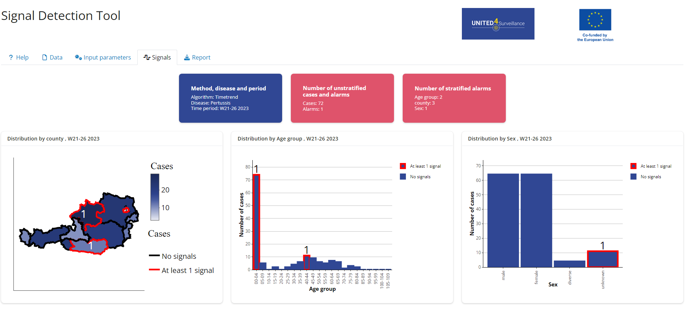

Overview
A shiny app for automated detection of signals in infectious disease surveillance data. A signal is an anomaly in an infectious disease surveillance time series.
This app allows the user to investigate generated signals and corresponding surveillance time series. It includes upload of csv or Excel files, data checks, possibility to set parameters for signal detection, visualisation of results and generation of reports. The tool is interactive and flexible so that it can be used in different contexts and customised to the user’s needs.
Installation and running the app
You can install the most recent release of the SignalDetectionTool from GitHub with:
# install.packages("devtools")
devtools::install_github("United4Surveillance/signal-detection-tool")To run the app you need to type:
Another way to install the tool is downloading the appropriate file found under Releases.
Detailed Installation Guideline for the Files in Releases
-
Navigating to the Release Page
- Scroll up and look on the right-hand side of the page under a section labelled Releases.
- Click on Releases to access the latest tool release.
- There are three different files you can download.
-
Download the provided
.tar.gzfile and save it on your computer. -
Install the package
remotesby puttinginstall.packages(“remotes”)in the console. -
Install the package dependencies for the SignalDetectionTool using the full path where you stored the
.tar.gzfile. Replacex.x.xwith the current version of the binary. For example:remotes::install_deps(“C:/Users/YourUsername/Downloads/SignalDetectionTool_x.x.x.tar.gz”) - Execute this command in the console.
- This should also install any dependencies you need to run the tool. Wait until the installation finishes successfully.
-
Write the following command into the console to install the tool:
install.packages(“path_to_the_tool/SignalDetectionTool_x.x.x.tar.gz”, repos = NULL, type=“source”) - Go back above the detailed installation instructions to read how to run the app.
-
Download the provided
.zipfile and save it on your computer (do NOT unzip). Open RStudio. -
Install the package
remotesby puttinginstall.packages(“remotes”)in the console. -
Install the package dependencies for the SignalDetectionTool using the full path where you stored the
.zipfile. Replacex.x.xwith the current version of the binary. For example:remotes::install_deps(“C:/Users/YourUsername/Downloads/SignalDetectionTool_x.x.x.binary.zip”) - Execute this command in the console.
-
This command will ask if you want to update your installed packages. Type
1and press enter to install the updates. For advanced users, you can also install only the minimal required versions written inside theDESCRIPTIONfile by usingremotes::install_version(). -
Install the SignalDetectionTool with:
install.packages(“your_path_to_the_zip/SignalDetectionTool_x.x.x_binary.zip”). - Go back above the detailed installation instructions to read how to run the app.
-
Download the provided
.zipfile and save it on your computer. -
Go into the unzipped SignalDetectionTool folder and double-click on the
SignalDetectionTool.Rprojfile to open it. -
Install packages via RStudio’s suggestion (click ‘Install’) or copy this line into the console:
devtools::install_deps(). -
The command may ask if you want to update your installed packages. Type
1and press enter to install updates. -
For advanced users, install minimal required versions from the
DESCRIPTIONfile usingremotes::install_version(). -
If
devtools::install_deps()gives an error (e.g., ‘no package called devtools’), install it with:install.packages(“devtools”), then run the command again. - To install the SignalDetectionTool, go to RStudio’s ‘Build’ tab (top right window) and click ‘Install’.
- Go back above the detailed installation instructions to read how to run the app.
Source Code (tar.gz)
This is a tarball. You must have Rtools installed on your computer to use this installation method. If you only want to run the app and use its functionalities, this is the correct installation for you. In case you are interested in modifying the code of the app, go to Source Code (zip).
SignalDetectionTool_x.x.x.zip
This is a binary. You do not need to have Rtools installed on your computer to use this installation method.
Source Code (zip)
This is a zipped folder of the SignalDetectionTool repository. You must have Rtools installed on your computer to use this installation method. It can be unzipped and installed over the ‘Build’ tab in RStudio. This is ideal if you want to modify the app’s code. Alternatively, you can clone the repository.
Usage
The shiny application is structured into a Help, Data, Input parameters, Signals and Report tab.
You can try the shiny application yourself using test data provided with the package.
Help
The Help tab provides more information to the user how to use the app and details about settings in the individual tabs and signal detection algorithms.
Data
Here is the description of the required data format to use the app. The input format is a line list of infectious disease cases. In the data tab the user can upload surveillance data (Excel or csv) for which the signal detection should be performed. A data format check is automatically run once the data file has been uploaded and feedback is provided to the user. Alternatively you can also view the required input format using:
Input parameters
In the Input parameters tab you can configure the signal detection you want to perform. You can specify filters, stratification variables, time periods and the signal detection algorithm which should be used. For some algorithms, a pandemic correction can be applied, incorporating an interrupted time series analysis into the outbreak detection methods. 
Signals
The Signals tab can look like this when using the test data and stratification by age group, county and sex and using a timetrend algorithm with pandemic correction: 

Report
In the Report tab HTML and Word reports can be generated showing the results of the Signals Tab. Reports can also be generated using the run_report() function.
Data Configuration File
There is the possibility to start the app with a predefined configuration. This means you don’t have to go through all the manual steps like selecting an input file, specifying stratification or choosing an algorithm. To use this functionality simply alter the command to start the app. Instead of run_app() you can use run_app(path_to_yaml="./path/config_file.yaml"). An example yaml file is part of the external data of the SignalDetectionTool package and can also be found here: data config example.
The YAML file needs to adhere to a particular structure and parameter values. It consists of mappings, sequences, and scalars that configure data sources, analytical settings, and pathogen-specific overrides.
Config File Structure
The YAML document is organized into root keys, each representing a distinct configuration profile.
1. Default Configuration (default)
The default root key provides global settings applied unless overridden by pathogen-specific mappings.
Data Source (datasource) (Mapping)
Specifies how input data is retrieved. Currently only supports file based data sources out of the box. - file (Scalar: Boolean)
- TRUE → Use an external file (CSV or Excel).
- FALSE → Use a database.
- filepath (Scalar: String) Path to the external file, applicable when file: TRUE.
- db (Nested Mapping) Child elements define database connection details (used when file: FALSE).
- host (Scalar: String) – Database server address (e.g., localhost).
- port (Scalar: Integer) – Database port (e.g., 5432).
- database (Scalar: String) – Name of the database.
Do note that there is no true database support right now! The DB related parameters are merely placeholders at the moment. To actually connect your own database to the tool, you will need to define custom functions and apply monkey patching. We plan to add full database support in the future.
Analysis Parameters (params) (Mapping)
Defines key variables for analysis and signal detection.
- pathogen (Scalar: String) – Default pathogen under analysis (e.g., Pertussis).
- strata (Sequence of Scalars: List of Strings) – Categories used to stratify the analysis (e.g., age_group, community).
- signal_detection_period (Scalar: Integer) – Time period (in weeks or months) for detecting signals.
- signal_detection_algorithm (Scalar: String) – Method used for signal detection (e.g., ears).
- pandemic_correction: (Scalar: Boolean) Correct for the effects of the COVID-19 pandemic, only used in GLM algorithms - intervention_date: (Scalar: String, Date format YYYY-MM-DD) - Date for the intervention in the pandemic correction models
2. Pathogen-Specific Mappings
In addition to the default configuration, you can also define pathogen-specific configurations as another root key. These mappings inherit values from default unless explicitly overridden.
This way it is possible to adjust parameters and algorithm choice to the pathogen of interest.
Note that the tool might only recognize and use certain values supplied via the config file. Currently, there is a limited set of valid values for stratification and algorithm choice. Possible strata values: - None - age_group - state - country - county - community - sex
Possible algorithms values: - “farrington” - “ears” - “cusum” - “glm mean” - “glm timetrend” - “glm harmonic” - “glm harmonic with timetrend” - “glm farrington” - “glm farrington with timetrend”
In the future we will strive to make the tool even more flexible and convenient.
Development Process and Contribution
The tool development is an open source development process. The participants of Work Package 2.2 of the United4Surveillance project will be the maintainers of the repository and can contribute directly, third parties can contribute via pull requests. The maintainers are meeting regularly to discuss pull requests, issues and to add new issues according to the collected requirements. Maintainers and contributors can work independently on issues. For more information on how to contribute, please see our contributing guidelines.
Roadmap
The initial version of the tool (0.1.0) was deployed in April 2024 to eleven European public health institutes for piloting. The official piloting phase ended in November 2024. The tool can and is used after November 2024 and will still be developed further.
Some key features we want to develop are:
- possibility to aggregate the time series on different levels i.e. daily, biweekly, monthly,…
- possibility to combine stratifications
- retrieve linelist with cases corresponding to signals generated